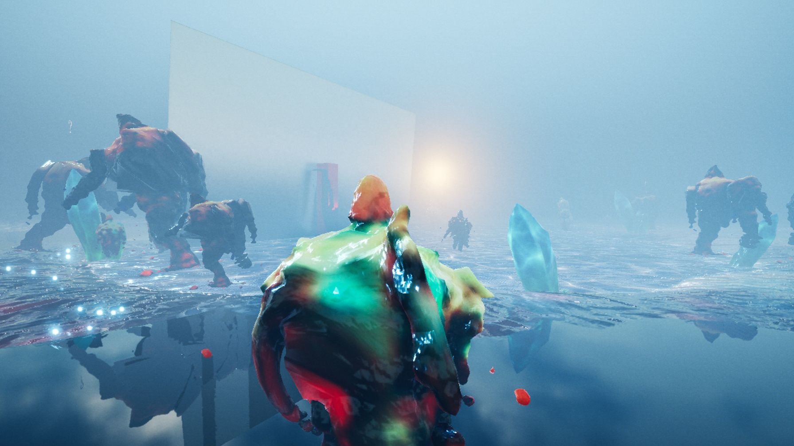
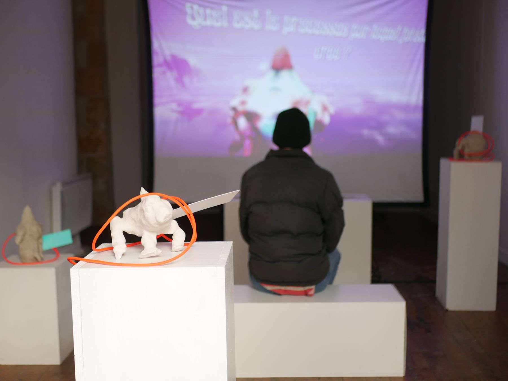
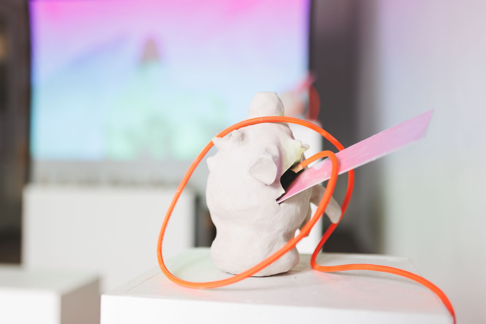
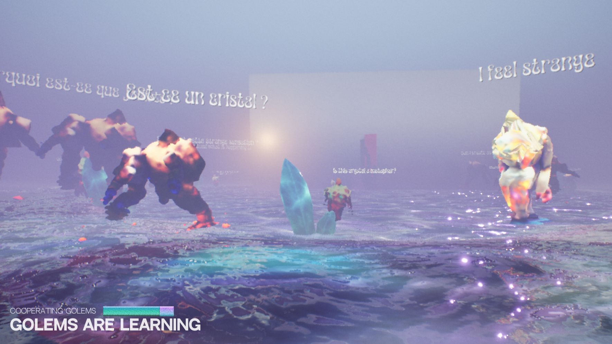
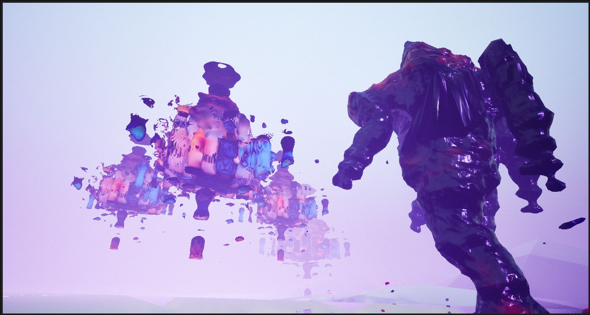
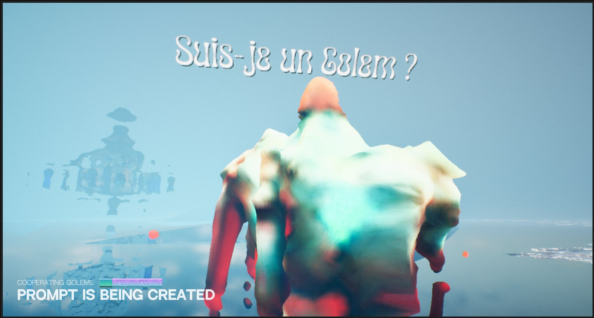
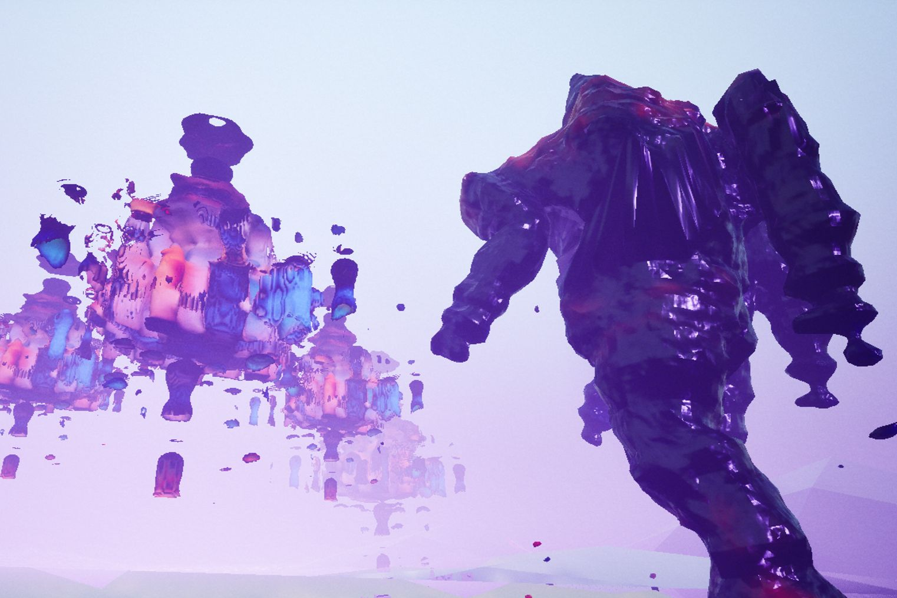
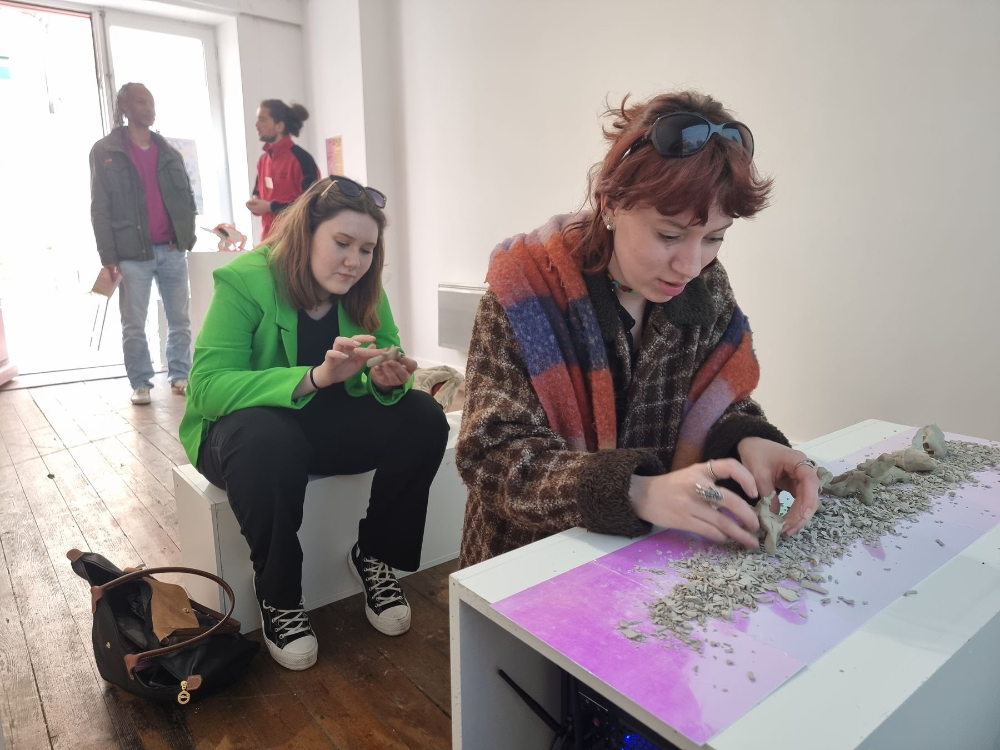
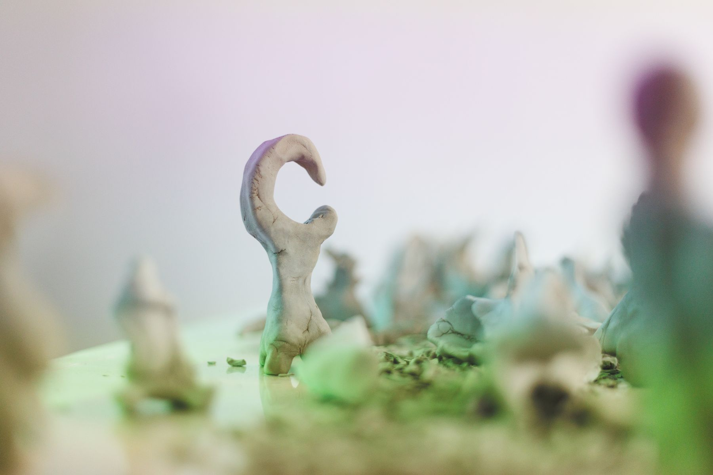

Entangled Matter: AI, Humans and Golems

Entangled Matter: AI, Humans and Golems begin with a desire to shift the focus from a racing technological anthropocentric pattern in which humans control and design creatures to a speculative place where we explore inspiration and cooperation between humans, virtual agents and AI within a feedback loop creation process.
As prompts quickly become the primary interface for interacting with AI models. The piece attempts to create a reflexive digital analog workflow about prompt interpretation. Entangled Matter: AI, Humans and Golems is, therefore, an installation in which analog-manual sculpting and virtual worlds become part of a ritualistic feedback loop where Artificial Intelligence, Human Artistic interpretation, and the rudimentary but evolving speech of Virtual Golem-Agents become entangled.
The piece is also a Workshop/installation in which analog-manual sculpting and virtual worlds become part of a ritualistic feedback loop where Artificial Intelligence, Human Artistic interpretation, and the rudimentary but evolving speech of Virtual Golem-Agents become entangled. This piece attempts to create a reflexive digital analog workflow about prompt interpretation.
Golem as technological symbol
In Jewish folklore, a golem is a creature arisen from inanimate matter (usually clay or mud) and brought to life by ritual incantations and sequences of Hebrew letters. The Golem, brought into being by a human creator, first becomes a helper, a companion, or a rescuer but later runs amok and becomes a threat to its creator.
We take the figure of the Golem as a metaphor for the current state of technology in the field of AI, in which a word or a text can bring an element to “life”. But contrary to the Jewish folklore story, our Golems can not be controlled; they begin as an AI creation living in a simulated space where they themselves post questions about their existence and create texts for us to be inspired and create more Golems, which in turn will be inserted in the simulation.


Perceiving and acting
Generative language and generative sound are used to subvert the Golem's traditional narrative in which human written text and symbols control matter, often leading to the obliteration of a fragile emergent subjectivity.
What degree of autonomy creates a "living" being? How can we program matter? How can matter program us? Can Golems reclaim their voice? Is the capability of interpreting reality a sign of consciousness, of identity? What does 'interpretation' mean for different agents?
In Entangled Matter: AI, Humans and Golems, control over text is not an overpowering force, and neither humans nor Golems are in total control of each other. Humans, machines, and matter are influenced and moved by their own different forms of interpreting information. Each agent imprints its identity and distinct voice into the process of interpreting "otherness."




Virtuality as a possible realm
In this piece, different technologies bridging both realms (AI 3D generation, 3D rendering, handmade sculpting, text-to-image models, photogrammetry, generative language and generative sound) are used to subvert the Golem's traditional narrative in which human written text and symbols control matter, often leading to the obliteration of a fragile emergent subjectivity.
After being sculpted, the scanned Golems become animated inside a virtual world built in Unreal Engine. They will perform several activities guided by rudimentary Artificial Intelligence behaviors. One of the most important is to develop a basic generative language out of simplified grammar to produce words, phrases and, finally, prompts that will be used for students to create more Golems.
Process
To develop the piece, a small workshop was designed for art students in which we reflected on the implications of programming matter, post-humanism, body in the digital age, and the use of natural language as an interface for producing several media assets such as images and 3D render in the field of Artificial Intelligence.
Following the analogy of the Golem and the reflections stated above, the students developed prompts to create 3D images (on the Dreamfields-3D generation model modified by Shengyu Meng) and gain inspiration to sculpt their own Golems with clay and other materials.
Software’s conceptual structure: Prompt from students after reflecting on technology → image on a text-to-3D image AI model → sculpture inspired by image → scan of sculpture → sculpture into virtual world → Golem create a prompt in virtual world → humans create a sculpture based on Golem's prompt.


Exhibitions
- ZERO1. Festival of Arts and Digital Cultures. La Rochelle, France, 2023.
Press
- Cnap (Centre national des arts plastiques)
Credits
- Concept and implementation Mario Guzman
- Audio Design Julia Koffler
- Unreal Engine Consultant Jeremy Couillard